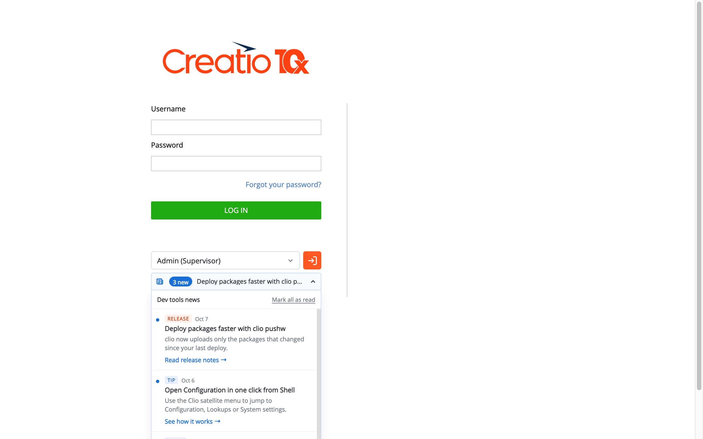
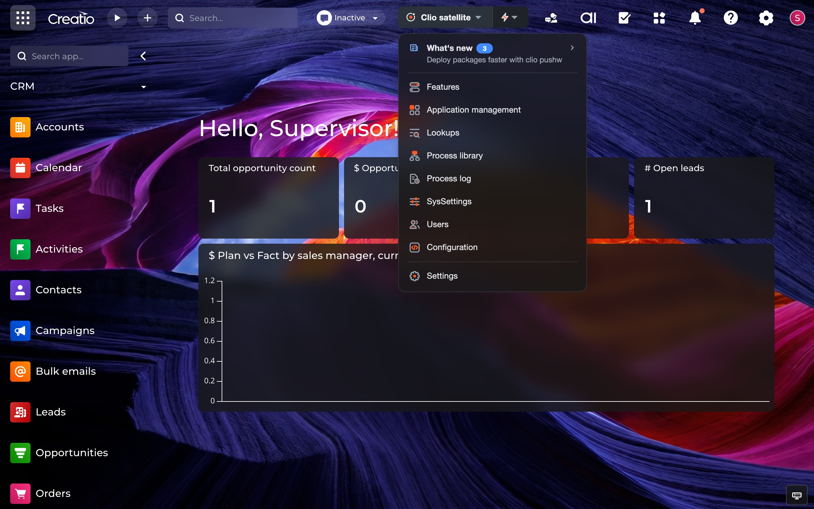
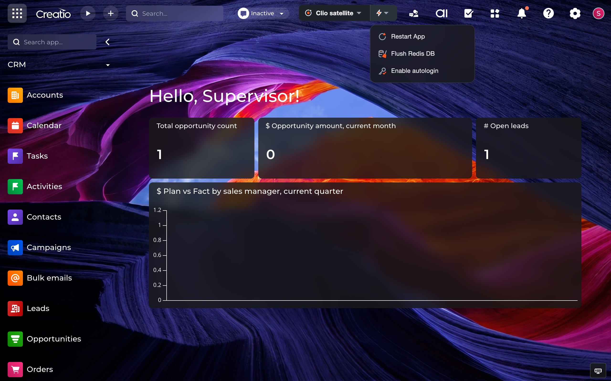
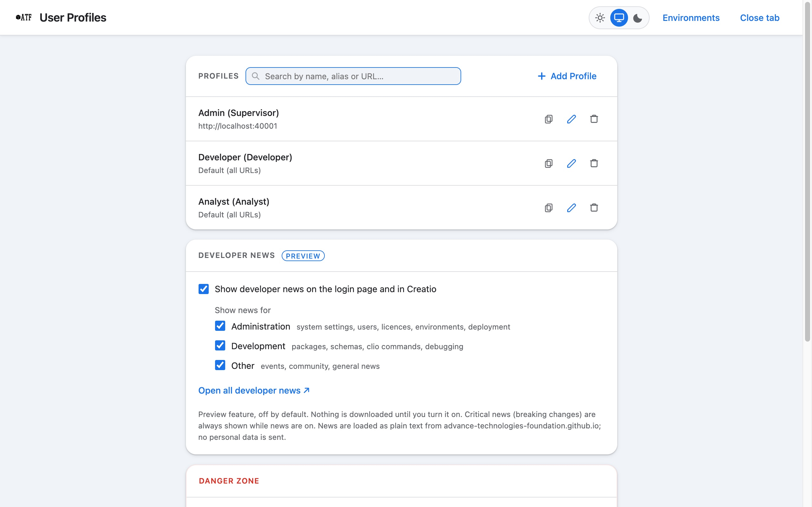
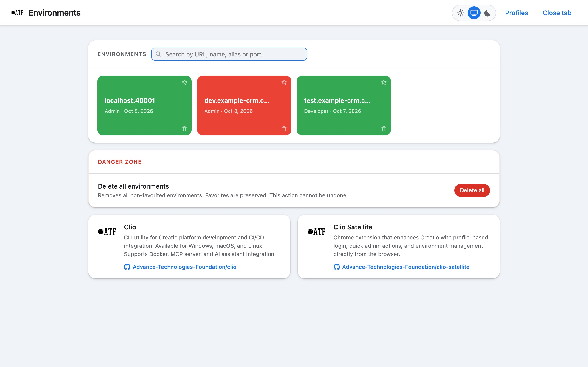
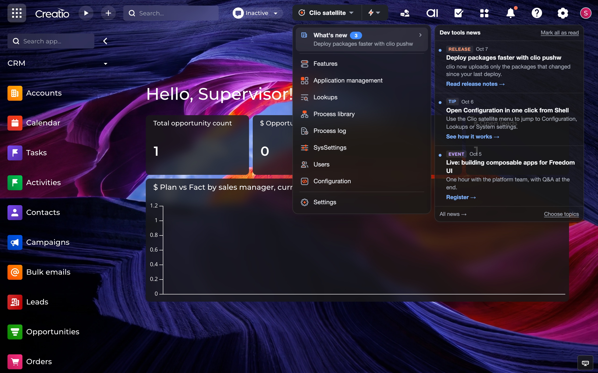

Save profiles once, pick one under the login form and you are in. Turn on autologin per environment if you want it.

Features, Application management, Lookups, Process library, System settings, Users and Configuration from the Clio satellite menu.

The actions menu runs common maintenance tasks on the environment you are working in.

Search profiles, see your last logins and which environments respond. Synced across your devices.


Short, optional updates on the login page and in the Clio satellite menu. Turn them on in Options.

One-click login and admin tools for Creatio
One-click login, admin pages and quick actions for every Creatio environment you work with.